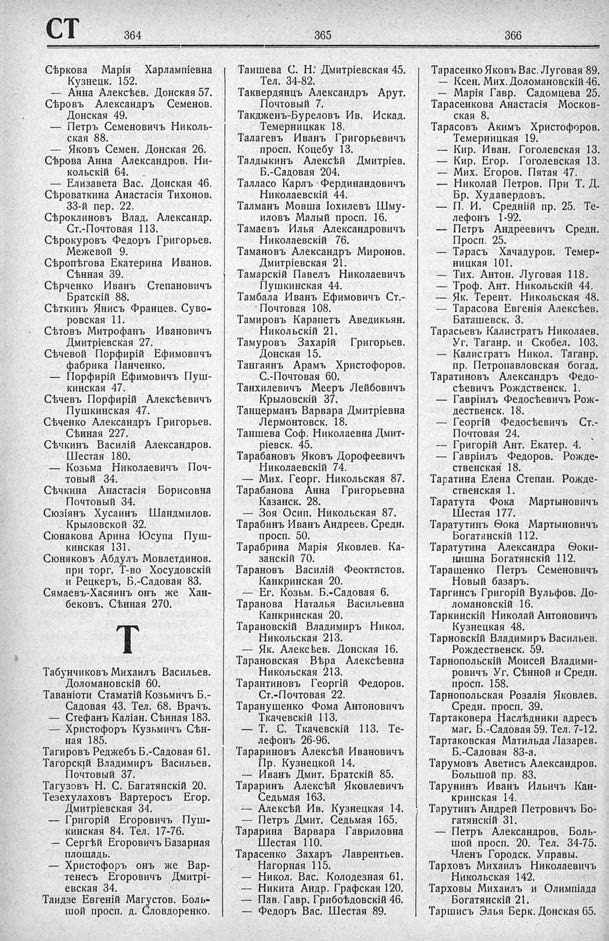

Лист источника 472
Скан

Распознанный текст
СТ 364
Сѣркова Марія Харлампіевна
Кузнецк. 152.
— Анна Алексѣев. Донская 57.
Сѣровъ Александръ Семенов.
Донская 49.
— Петръ Семеновичъ Николь-
ская 88.
— Яковъ Семен. Донская 26.
Сѣрова Анна Александров. Ни-
кольскій 64.
— Елизавета Вас. Донская 46.
Сѣроваткина Анастасія Тихонов.
33-й пер. 22.
Сѣроклиновъ Влад. Александр.
Ст.-Почтовая 113.
Сѣрокуровъ Федоръ Григорьев.
Межевой 9.
Сѣропѣгова Екатерина Иванов.
Сѣнная 39.
Сѣрченко Иванъ Степановичъ
Братскій 88.
Сѣткинъ Янисъ Францев. Суво-
ровская 11.
Сѣтовъ Митрофанъ Ивановичъ
Дмитріевская 27.
Сѣчевой Порфирій Ефимовичъ
фабрика Панченко.
— Порфирій Ефимовичъ Пуш-
кинская 47.
Сѣчевъ Порфирій Алексѣевичъ
Пушкинская 47.
Сѣченко Александръ Григорьев.
Сѣнная 227.
Сѣчкинъ Василій Александров.
Шестая 180.
— Козьма Николаевичъ Поч-
товый 34.
Сѣчкина Анастасія Борисовна
Почтовый 34.
Сюзіянъ Хусаинъ Шандмилов.
Крыловской 32.
Сюнакова Арина Юсупа Пуш-
кинская 131.
Сюняковъ Абдулъ Мовлетдинов.
при торг. Т-во Хосудовскій
и Рецкеръ, Б.-Садовая 83.
Сямаевъ-Хасяинъ онъ же Хан-
бековъ. Сѣнная 270.
Т
Табунчиковъ Михаилъ Васильев.
Доломановскій 60.
Таваніоти Стаматій Козьмичъ Б.-
Садовая 43. Тел. 68. Врачъ.
— Стефанъ Каліан. Сѣнная 183.
— Христофоръ Кузьмичъ Сѣн-
ная 185.
Тагировъ Реджебъ Б.-Садовая 61.
Тагорскій Владимиръ Васильев.
Почтовый 37.
Тагузовъ Н. С. Багатянскій 20.
Тезехулаховъ Вартеросъ Егор.
Дмитріевская 34.
— Григорій Егоровичъ Пуш-
кинская 84. Тел. 17-76.
— Сергѣй Егоровичъ Базарная
площадь.
— Христофоръ онъ же Вар-
тенесъ Егоровичъ Дмитрі-
евская 34.
Таидзе Евгеній Магустов. Боль-
шой просп. д. Словдоренко.
365
Таишева С. Н. Дмитріевская 45.
Тел. 34-82.
Таквердянцъ Александръ Арут.
Почтовый 7.
Такдженъ-Буреловъ Ив. Искад.
Темерницкая 18.
Талагевъ Иванъ Григорьевичъ
просп. Коцебу 13.
Талдыкинъ Алексѣй Дмитріев.
Б.-Садовая 204.
Талласо Карлъ Фердинандовичъ
Николаевскій 44.
Талманъ Мовша Іохилевъ Шму-
иловъ Малый просп. 16.
Тамаевъ Илья Александровичъ
Николаевскій 76.
Тамановъ Александръ Миронов.
Дмитріевская 21.
Тамарскій Павелъ Николаевичъ
Пушкинская 44.
Тамбала Иванъ Ефимовичъ Ст.-
Почтовая 108.
Тамировъ Карапетъ Аведикьян.
Никольскій 21.
Тамуровъ Захарій Григорьев.
Донская 15.
Тангаянъ Арамъ Христофоров.
С.-Почтовая 60.
Танхилевичъ Мееръ Лейбовичъ
Крыловскій 37.
Танцерманъ Варвара Дмитріевна
Лермонтовск. 18.
Таншева Соф. Николаевна Дмит-
ріевск. 45.
Тарабановъ Яковъ Дорофеевичъ
Николаевскій 74.
— Мих. Георг. Никольская 87.
Тарабанова Анна Григорьевна
Казанск. 28.
— Зоя Осип. Никольская 87.
Тарабинъ Иванъ Андреев. Средн.
просп. 50.
Тарабрина Марія Яковлев. Ка-
занскій 70.
Тарановъ Василій Феоктистов.
Канкринская 20.
— Ег. Козьм. Б.-Садовая 6.
Таранова Наталья Васильевна
Канкринская 20.
Тарановскій Владимиръ Никол.
Никольская 213.
— Як. Алексѣев. Донская 16.
Тарановская Вѣра Алексѣевна
Никольская 213.
Тарантиновъ Георгій Федоров.
Ст.-Почтовая 22.
Таранушенко Фома Антоновичъ
Ткачевскій 113.
— Т. С. Ткачевскій 113. Те-
лефонъ 26-96.
Тарариновъ Алексѣй Ивановичъ
Пр. Кузнецкой 14.
— Иванъ Дмит. Братскій 85.
Тараринъ Алексѣй Яковлевичъ
Седьмая 163.
— Алексѣй Ив. Кузнецкая 14.
— Петръ Дмит. Седьмая 165.
Тарарина Варвара Гавриловна
Шестая 110.
Тарасенко Захаръ Лаврентьев.
Нагорная 115.
— Никол. Вас. Колодезная 61.
— Никита Андр. Графская 120.
— Пав. Гавр. Грибоѣдовскій 46.
— Федоръ Вас. Шестая 89.
366
Тарасенко Яковъ Вас. Луговая 89.
— Ксен. Мих. Доломановскій 46.
— Марія Гавр. Садомцева 25.
Тарасенкова Анастасія Москов-
ская 8.
Тарасовъ Акимъ Христофоров.
Темерницкая 19.
— Кир. Иван. Гоголевская 13.
— Кир. Егор. Гоголевская 13.
— Мих. Егоров. Пятая 47.
— Николай Петров. При Т. Д.
Бр. Худавердовъ.
— П. И. Средній пр. 25. Те-
лефонъ 1-92.
— Петръ Андреевичъ Средн.
Просп. 25.
— Тарасъ Хачадуров. Темер-
ницкая 101.
— Тих. Антон. Луговая 118.
— Троф. Ант. Никольскій 44.
— Як. Терент. Никольская 48.
— Тарасова Евгенія Алексѣев.
Баташевск. 3.
Тарасьевъ Калистратъ Николаев.
Уг. Таганр. и Скобел. 103.
— Калистратъ Никол. Таганр.
пр. Петропавловская богад.
Таратиновъ Александръ Федо-
сѣевичъ Рождественск. 1.
— Гавріилъ Федосѣевичъ Рож-
дественск. 18.
— Георгій Федосѣевичъ Ст.-
Почтовая 24.
— Григорій Ант. Екатер. 4.
— Гавріилъ Федоров. Рожде-
ственская 18.
Таратина Елена Степан. Рожде-
ственская 1.
Таратута Фока Мартыновичъ
Шестая 177.
Таратутинъ Ѳока Мартыновичъ
Богатянскій 112.
Таратутина Александра Ѳоки-
нишна Богатянскій 112.
Таращенко Петръ Семеновичъ
Новый базаръ.
Таргинсъ Григорій Вульфов. До-
ломановскій 16.
Таркинскій Николай Антоновичъ
Кузнецкая 48.
Тарновскій Владимиръ Васильев.
Рождественск. 59.
Тарнопольскій Моисей Владими-
ровичъ Уг. Сѣнной и Средн.
просп. 158.
Тарнопольская Розалія Яковлев.
Средн. просп. 39.
Тартаковера Наслѣдники адресъ
маг. Б.-Садовая 59. Тел. 7-12.
Тартаковская Матильда Лазарев.
Б.-Садовая 83-а.
Тарумовъ Аветисъ Александров.
Большой пр. 83.
Тарунинъ Иванъ Ильичъ Кан-
кринская 14.
Тарутинъ Андрей Петровичъ Бо-
гатянскій 31.
— Петръ Александров. Боль-
шой просп. 20. Тел. 34-75.
Членъ Городск. Управы.
Тарховъ Михаилъ Николаевичъ
Никольская 142.
Тарховы Михаилъ и Олимпіада
Богатянскій 21.
Таршисъ Элья Берк. Донская 65.